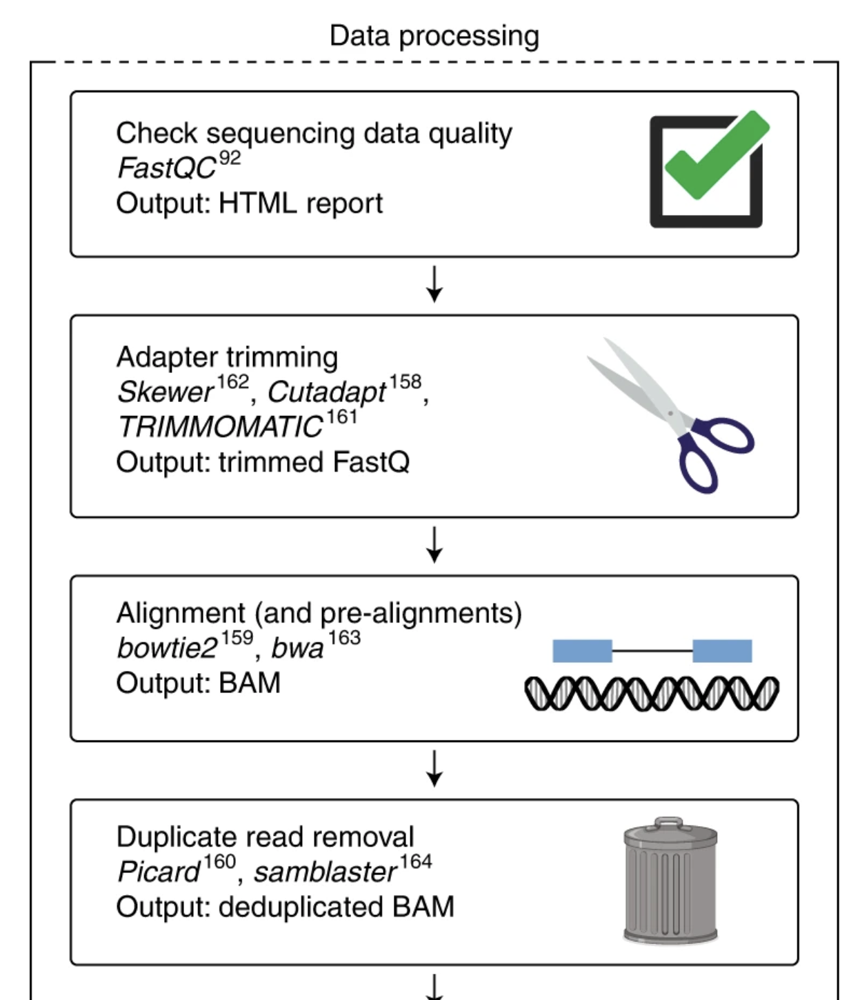

FASTQC (ENCODE example)
Learning Objectives
- Download a public ATAC-seq FASTQ file from ENCODE
- Create a randomized smaller subset for testing using
seqtk - Run FastQC on sequencing data to assess quality
- Inspect and interpret FastQC results to evaluate data quality
Why FastQC Analysis is Essential
FastQC is the critical first step in any sequencing data analysis pipeline. Before proceeding with downstream analysis like alignment, variant calling, or differential expression, you must assess the quality of your raw sequencing data. Quality issues such as adapter contamination, low-quality bases, or systematic biases can lead to incorrect results and wasted computational resources.
The flowchart below illustrates a typical bioinformatics pipeline, where quality assessment with FastQC is the foundational step that informs all subsequent processing decisions:

Figure: Typical sequencing data processing pipeline. FastQC quality assessment (Step 1) must be performed before any downstream analysis. The results guide decisions about adapter trimming, quality filtering, and help identify potential issues that could affect alignment and quantification steps.
Dataset overview & ethical note
Example dataset (ENCODE): ENCFF535OGL, from experiment ENCSR862JVD. For this handbook we use a mouse (Mus musculus) sample to avoid human-data ethical concerns during demonstrations.
- Assay: ATAC-seq
- Platform: Illumina NextSeq 500 (typical for small experiments)
- Biosample: C57BL/6J mouse monocyte (adult)
- Note: Always check data usage terms of repositories and avoid using identifiable human data without approvals.
Step 0 — Make sure tools are available
Activate the environment we created earlier (example name: bio-tools), so seqtk, wget, and fastqc are available.
conda activate bio-tools
Step 1 — Navigate to your project raw_data folder
Use the folder structure from Chapter 1. If you followed that structure your raw reads go here:
cd ~/atacseq/raw_data pwd # confirm you are in the correct folder
Step 2 — Download the FASTQ file from ENCODE
ENCODE files can be downloaded using their file URL. Run:
wget https://www.encodeproject.org/files/ENCFF535OGL/@@download/ENCFF535OGL.fastq.gz
wget is not installed, install with conda install wget.
Progress & expected result: the file ENCFF535OGL.fastq.gz should appear in ~/atacseq/raw_data. Use ls -lh to check file size and timestamp.
Step 3 — Subsample the FASTQ using seqtk
Large FASTQ files can be many gigabytes. For tutorials and quick tests we usually create a smaller, randomized subset. seqtk sample -s SEED IN_FASTQ N draws N reads at random using a seed for reproducibility.
# Example: take 1,000,000 reads (single-end). The -s 100 sets a reproducible random seed. seqtk sample -s 100 ENCFF535OGL.fastq.gz 1000000 | gzip > ENCFF535OGL_subset.fastq.gz
- 1000000 = number of reads to sample. Choose smaller (10000) or larger based on your needs. For paired-end data you should sample read pairs (use seqtk with appropriate flags or sample by reads per pair; see paired examples).
- -s 100 fixes the RNG seed so your sampling is reproducible (same subset every run).
- Piping through
gzipcompresses the subset and saves disk space.
Step 4 — Run FastQC on the subset
FastQC produces an HTML report summarizing per-base quality, adapter content, and other QC metrics.
fastqc ENCFF535OGL_subset.fastq.gz -o ../results/fastqc/
Expected output (terminal message):
Analysis complete for ENCFF535OGL_subset.fastq.gz
The FastQC run will create an .html report and a .zip archive inside ../results/fastqc/ (relative to raw_data).
Step 5 — Inspect results
Go to the results folder and list files:
cd ../results/fastqc/ ls -lh
You should see files similar to:
-rw-r--r-- 1 you staff 719K Oct 22 00:25 ENCFF535OGL_subset_fastqc.html -rw-r--r-- 1 you staff 880K Oct 22 00:25 ENCFF535OGL_subset_fastqc.zip
Open the HTML report in your default browser:
open ENCFF535OGL_subset_fastqc.html
The FastQC HTML report contains the following quality control modules:
| Module | Description | What to Look For |
|---|---|---|
| Basic Statistics | Overview of FASTQ file including total sequences, length, %GC content, and quality encoding. | Verify file processed correctly and matches expected sequencing parameters. |
| Per Base Sequence Quality | Average Phred quality score at each position along the read length (displayed as boxplot). | Consistently high scores (Q20-30+). Quality degradation at 3' end may require trimming. |
| Per Tile Sequence Quality | Quality scores averaged across each tile position on the Illumina flow cell. | Uniform quality across tiles. Lower quality in specific tiles indicates technical issues. |
| Per Sequence Quality Scores | Distribution of mean quality scores per read sequence (histogram). | Normal distribution centered on high quality scores. Low quality peaks indicate poor reads. |
| Per Base Sequence Content | Percentage of each nucleotide (A, T, G, C) at each position along reads. | ~25% of each base at every position. Deviations indicate adapter contamination or PCR bias. |
| Per Sequence GC Content | Distribution of GC content across all sequences compared to theoretical normal distribution. | Normal distribution centered on expected GC content. Unusual distributions suggest contamination. |
| Per Base N Content | Percentage of N (ambiguous base) calls at each position. | 0% or very low N content. High N content indicates poor base calling or sequencing issues. |
| Sequence Length Distribution | Distribution of read lengths in your dataset. | Single sharp peak for uniform read lengths. Multiple peaks suggest adapter contamination or trimming artifacts. |
| Sequence Duplication Levels | Percentage of sequences present at different duplication levels (1x, 2x, 3x, etc.). | Low duplication levels. High duplication (>50%) may indicate PCR bias or artifacts in genomic sequencing. |
| Overrepresented Sequences | Sequences appearing more frequently than expected, with possible source identification. | No overrepresented sequences. If adapters/primer sequences found, trimming is necessary. |
| Adapter Content | Cumulative percentage of adapter contamination detected at each position along reads. | No adapter content. If >5% detected, adapter trimming required before downstream analysis. |
Interpreting FastQC Results: FastQC assigns a status (✓ pass, ⚠ warning, ✗ fail) to each module. While warnings and failures indicate potential issues, context matters—some "failures" may be acceptable depending on your experimental design and downstream analysis needs. Use these metrics to guide quality filtering and trimming decisions.
Extra: remove large files
If you want to remove the full original FASTQ to save space (be careful), run:
rm ENCFF535OGL.fastq.gz
Warning: only delete files once you are certain you don’t need them.
Troubleshooting
- wget 404 or permission error: confirm the URL in your browser, and that the file’s access is public. ENCODE sometimes requires specific download methods; open the file page and copy the “download” link.
- seqtk: command not found: ensure
conda activate bio-toolsand that seqtk was installed in that env (conda list | grep seqtk). - FastQC runs but HTML missing: check the output directory path (
-o ../results/fastqc/) and ensure you have write permission to that folder. - Subsample too small/too big: choose
Nappropriate to your machine and goals (10k–1M reads common for testing). If using paired-end data, be careful to keep pairs together.